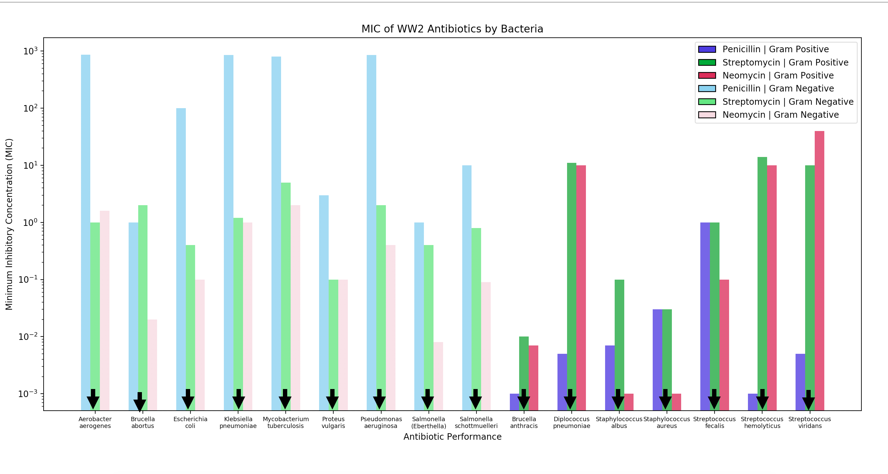

Homework 1 - Robert Belson
To visualize the performance of the three antibiotics – Penicillin, Streptomycin, and Neomycin – on 16 different types of bacteria, 4 key insights were critical towards the generation of the bar graph.
- The only quantitative data in this dataset is the minimum inhibitory concentration (MIC). Unintuitively, the visualization has to capture that the most effective antibiotic accepts a lower concentration of the antibiotic which might contradict the assumption that “more is better.”
- One of the primary axes of the visualization, highlight the performance for each of 16 bacteria, consists of nominal data (e.g., bacterium name). Ideally, one would have preferred intervallic quantitative data (e.g., dates) to use a line graph to plot performance of the 3 antibiotics over time. Instead, the objective is to plot performance of 3 totally separate antibiotics on 16 totally separate nominal variables.
- The visualization will include binary data (e.g., gram staining or no gram staining) that would be best visualized by hue or texture. In the event that color is used as the visual variable to differentiate between the 3 antibiotics, texture (e.g., solid vs. shaded) can be used as the visual variable highlighting gram staining.
- Given that the MIC for each antibiotic is extremely variant, using a logarithmic space for y values will be more visually valuable
Using Python’s matplotlib library, I leveraged a bar graph structure to visualize the MIC of the 3 antibiotics by each bacterium. The x axis showcases a nominal variable (e.g., bacterium name) and the y axis expresses a quantitative ratio variable (MIC) with a position or rather shape (e.g, size of rectangle) in space. Lastly, both hue (e.g., color) and value (e.g., transparency) are leveraged in this visualization. The 3 colors – red, green, and blue – are a nominal variable representing the 3 antibiotics. However, using value via transparency, we can visualize whether that bacterium leveraged gram staining. Said differently, a light blue bar graph represents no gram staining whereas dark blue bar graph represents gram staining. To further elucidate this change, I also leveraged texture to further highlight this distinction; bacterium that were gram positive (e.g., colloquialism for bacterium that experienced gram staining) can be visualized with the ‘slashed texture’ whereas gram negative can be visualized by no texture (e.g., monochromatic rectangle).
Assignment 1 Updated submission

Assignment 1 Original submission

×